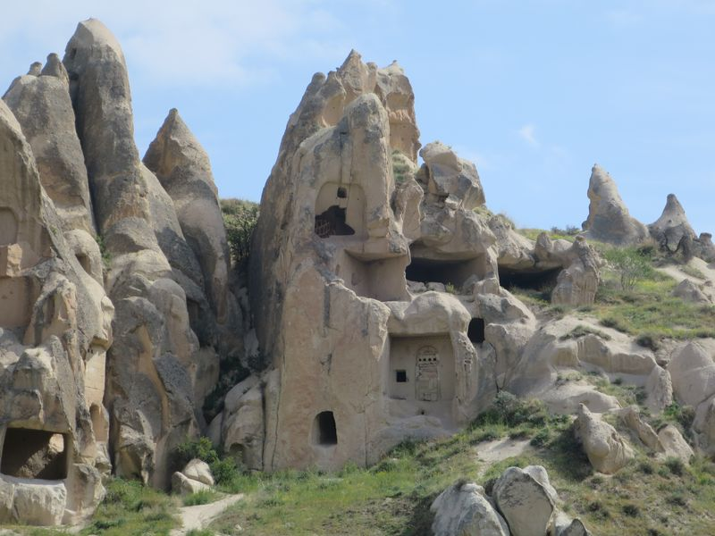

Göreme

天亮了，車開始經過一座座大石，大石上有一個個洞，像屋一樣，看來已經進入了 Cappadocia，不過還要一段時間，才到達 Göreme。Göreme 是 Cappadocia 中間一個城，這裏比較方便去安排各種 tour，而且要行山也很方便。
Göreme 很細，Octogar 也是，清晨時間到達，沒有人似的。我和 T 和 B 分開，去找 Ahmed 推介的 Hostel Terra Vista。時間還早，不過幸好有人，而且有房，50 TL 一晚，這個時候不用預訂就有空房，看來遊客真的很少。
洗過澡上天台吃早餐，這 hostel 的天台風景好。坐久了才發覺，這裏冷了很多，而且風很大，今天天也很多雲，咖啡很快就變涼。從天台望 Göreme 和周圍的山石，但沒有熱氣球。熱氣球要 100 EUR 我不玩，之前玩過就不用再玩。但照計大把人來玩，有些相片是上空有很多熱氣球的。
我會在這裏留四天，有時都不知道是不是太多了，但行山應該可以用很多時間吧。這裏有些 tour，green tour、red tour、blue tour，其實我每天一個都可以好充實。不過 hostel 人話 red tour 的地方我自己可以去。
行去 Open-Air Museum，主要是看幾座保存良好的教堂，和裏面的璧畫，雖然我覺得都不是保存得好好，但之後去別的地方看的，比較之下，已經好好了，都是 10 至 12 世紀的東西，尤其是要額外收費的 Dark Church (Karanlik Kilise)，細細間但裏面的畫保存得好好。
食完晏，坐巴士去 Uçhisar，2 TL，Uçhisar，人少得很，在市中的街上行走，看見有些 guesthouse，但關了門，向著 Uçhisar Castle 方向繼續行，看見 Castle 周圍的那些石山，上面一個個洞，有些像擺賣的店，但全都沒有人。
有一個角度看過去，很像《Winter Sleep》中主角旅館外的山路，只知電影是在 Cappadocia 拍。我行過去看看山路是不是也會通往一間房，但落到去，幾個洞的房都像沒有東西了，荒廢了還是怎樣呢？行回去 Castle 那邊，風大得很，入 Castle 裏面避避。
Castle 也是大座大石山，不過有很多的房，多年的風化侵蝕等等，遲早會倒閉，基本上 Cappadocia 的古蹟都是同一命運。可開放的地方很少，只有數間房，以及可以上去 Castle 的頂。
Uçhisar Castle 是個名勝古蹟，旅遊資料建議一早來看避開一車車的遊客。明信片還見到城堡也是熱氣球的常用背景。現在只得我一個人。城頂看過去通往 Göreme 的 Pigeon Valley，看看究竟如何行才對。
在 Cappadocia 行山，沒有什麼詳詳細資料，找到的資料，總是說你會看到路標，跟著路行便可。今天下午打算行的是 Pigeon Valley，或者由 Göreme 那邊來的路會較清楚？不知道，只知道我經常找不到所謂有清楚指示的「入口」。
我也常常選了不正常的路，明明在上面看過去，應該是 castle 東面入比較「正路」，偏偏卻因想在西面的一座座石中行，而選了那邊，路都是沙石，只要斜多一點點，我的鞋就滑到七彩，今次我雖然穿了普通的運動鞋，平時行街是好一點，不會弄髒腳，但這些路，還是 crocs 強。
周圍都沒人，一個細路女不知從哪裏彈出來，行在我前面，見我不敢行些斜路或好慢，就停下來，叫我跟著她，我不知她說什麼，但也跟著她，然後去到盡頭，我行去 Valley 的方向，她就是叫我跟著她行另一面，指手劃腳意思似乎是那邊不通，要回到去車路。
仍是不聽勸告，繼續行上去，其實是去了城堡後面的一些酒店和住屋，穿過之後就見到谷地，不過這段路又斜又爛，小心地慢行。心想都是這個方向，去到一個分支路口，看見有指示寫著 Göreme，心諗冇死喇掛。
但行著行著好像行了去人家的田，然後路越來越難行，越來越容易滑倒，去到一處，終於滑了去矮一點的地方，然後還要遇上兩隻狗，牠們走過來叫，應該是要趕我走，幸好有人走過來，說這裏通不過去 Göreme，指了我去上方的路。
那就沿著上方的路行，卻越行越上，差不多是 valley 的崖邊，然後去了一處，沒法了，很高，過不了，以我的鞋必定行不了，而且滑下去是好大件事那種，終於放棄了，一定是行錯了路，不會這樣難的。
但看看那張超簡單的地圖，又真的經過了一個疑似 tunnel 的地方，心有不甘，不斷去試行各分支，因為其實真的好多分支，有一條是向下的，是回到谷底的，應該是對的，但去到卻是水，想起，難道因為儲了水所以剛才的人說行不通？
試過很多路之後，死死地行回上去，兜了很多彎，才行到車路，算了，其實都看到 Valley 的一些風景，沿著車路行回去。走著走著，發現一隻狗不知從何時開始跟著我。我停，牠停，我行，牠行，有時牠又走了出馬路，弄到些汽車要避開，有時真的很驚險。
行了很久，牠仍然在，我停下來走到崖邊看風景，牠又走過去，搞乜呀，我趕牠走也沒用。行到 Göreme 了，我入去那些旺區，終於不見牠了。
因為胃口的問題，到現在也試不了多少土耳其的食物，走去出名當地 pide 的店，點了豆湯和 pide，土耳其豆湯都好好飲，他們沙律和湯都附上檸檬，我到了今天不知自己浪費了多少食物，一來就超多麵包和沙律，有些餐廳奉送沙律的，我根本吃不完，由吃少少，到索性不吃，到點餐前說不要來麵包沙律了。
喝完個湯都飽咗，但是怎樣也要吃 pide，而且真的好好味，但十分大個，他們會將個 pide 切成一片片，但都十幾廿片，我吃了幾片已經吃不下，唯有打包。
室外凍到癲，究竟係咪得幾度，聽日要帶埋件 fleece 至得。
Göreme



Uçhisar
Uçhisar Kale

 Turkish pide
Turkish pide